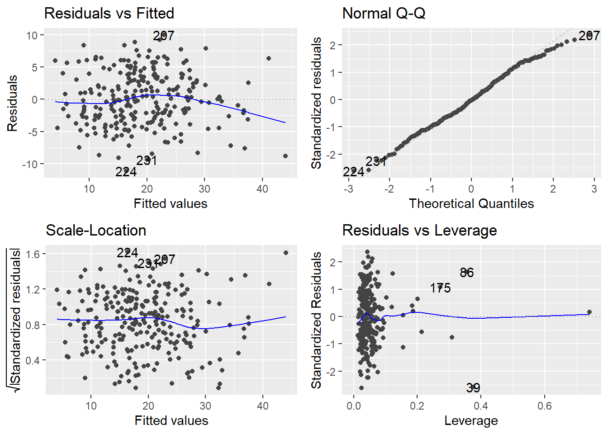
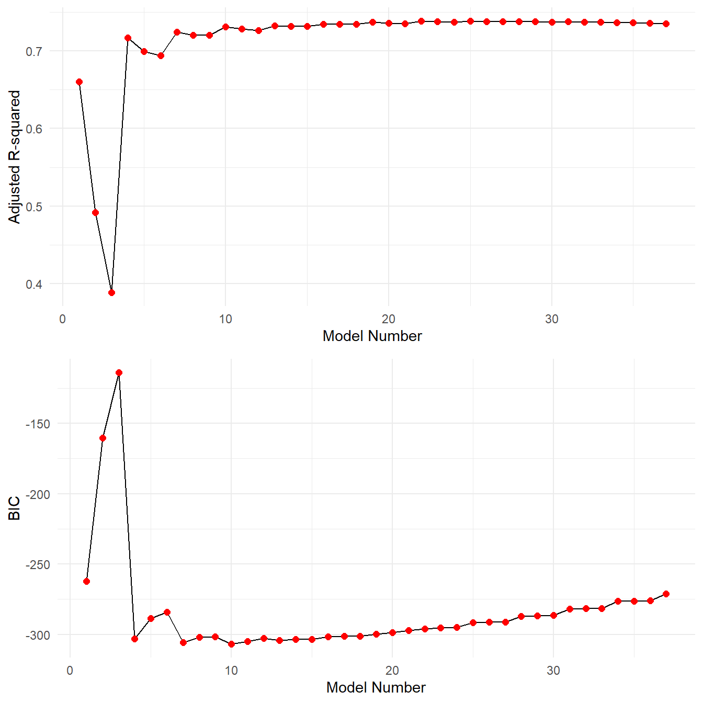

Chapter 9 Model Selection
One of the important themes running through what we do in regression concerns model simplification. The principle of parsimony, by which we should abide, is attributed to the 14th century English logician William of Occam, who developed what is known as Occam’s Razor):
Occam’s Razor (paraphrased) All other things being equal, the simplest explanation tends to be the correct explanation.
The term razor refers to the act of shaving away unnecessary complications to get to the simplest explanation. In statistical models, application of Occam’s Razor means that models should have as few parameters as possible, and should be pared down until they are “minimally adequate.” This theme extends beyond this course (model parsimony is important in many areas of statistics).
Historically, the process of model simplification required the application of hypothesis testing in regression models. In general, a predictor variable \(X_j\) under investigation was retained in a model only if it was statistically significant (i.e., if the test for \(H_0: \beta_j = 0\) had a small \(p\)-value). However, one can show that this method of choosing predictors to retain is fraught with potential problems (e.g., consider multicollinearity), so luckily more robust methods have been developed for the task.
In our quest to simplify models, however, we must be careful not to throw out the baby with the bathwater. Too simple is not good, either! Building statistical models is as much an art as it is a science, so you must be aware of how your models are explaining the observed data at every step along the way to obtaining a final model.
9.1 Stepwise Procedures
Variable selection is intended to select some “best” subset of predictors. Why bother?
Occam’s Razor applied to regression implies that the smallest model that fits the data is best. Unnecessary predictors can add noise to the estimation of other quantities that we are interested in.
Multicollinearity may result by having too many variables trying to do the same job. Judicious removal of redundant variables can greatly improve estimation of the effects of the predictors on the response.
Cost considerations: if the model is to be used for prediction, we can save time and/or money by not measuring redundant predictors.
Prior to any variable selection, you should:
Identify outliers/influential points, perhaps excluding them at least temporarily.
Apply transformations to the variables that seem appropriate from a preliminary inspection of the data (standardizing predictor variables or squaring terms to handle curvature, etc…).
There are two useful measures for comparing the quality of the fits of regression models: \(R_{adj}^2\) and the Akaike Information Criterion (AIC). We will do a demonstration of variable selection using both measures, but the AIC is preferable in practice because its concept is applicable to a broader array of model types.
Minimizing the “loss of information.” Before engaging in the construction of a regression model, we must first accept that there are no true models. Indeed, models only approximate reality. The question then is to find which model would best approximate reality given the data we have recorded. In other words, we are trying to minimize the loss of information. Kullback and Leibler addressed such issues in the 1950s and developed a measure to represent the information lost when approximating reality (i.e., a good model minimizes the loss of information). A few decades later, Japanese statistician Hirotugu Akaike proposed a method for variable selection. He established a relationship between the maximum likelihood, which is an estimation method used in many statistical analyses, and the Kullback-Leibler measure. The result is known as the Akaike Information Criterion, defined by
\[AIC = n\log\left({RSS}/{n}\right) + 2k\]
The AIC penalizes a model for the addition of parameters (\(k\)), and thus selects a model that fits well but also has a minimum number of parameters (i.e., simplicity and parsimony).
By itself, the value of the AIC for a given data set has no meaning. It becomes interesting when it is compared to the AICs of a series of models. Specified in advance, the model with the lowest AIC is generally considered the best model among all models specified for the data at hand. Thus, if only poor models are considered, the AIC will select the best of the poor models. This highlights the importance of spending time to determine the set of candidate models based on previous investigations, as well as judgment and knowledge of the system under study.
Once appropriate transformations have been applied (if warranted), one may run each of the models and compute the AIC. The models can then be ranked from best to worse (i.e., low to high AIC values). But, be aware of the following:
- One should ensure that the same data set is used for each model; i.e., the same observations must be used for each analysis.
- Missing values for only certain variables in the data set can also lead to variations in the number of observations.
- Furthermore, the same response variable \(Y\) must be used for all models (i.e., it must be identical across models, consistently with or without transformation).
9.1.1 Backward Selection
Strategy for stepwise variable selection using AIC:
- Start with all the candidate predictors in the model. Check assumptions and make corrections if necessary.
- Run a whole-model $F4-test on this “global” model. Be sure it indicates that your model does have utility. If not, then none of your variables should be selected!
- Find the AIC of the global model.
- Look at all candidate models that result by the removal of one predictor from the global model. This is called “backward selection.” Calculate the AIC for each of these models.
- Pick the model with the smallest AIC. (Akaike’s rule of thumb: two models are essentially indistinguishable if the difference in their AIC is less than 2.)
- Return to step 4, and repeat the process starting with the revised model.
- Continue the process until the deletion of any predictor results in a rise in the AIC.
Long-winded example To demonstrate the stepwise process let’s consider the housing appraisal dataset. We’ve used the full model fit multiple times.
AIC(appraisal.fit)## [1] 421.356Now lets consider the three models were we remove a single predictor.
appraisal.no.land <- lm(saleprice ~ impvalue + area, data=appraisal)
appraisal.no.imp <- lm(saleprice ~ landvalue + area, data=appraisal)
appraisal.no.area <- lm(saleprice ~ landvalue + impvalue, data=appraisal)
AIC(appraisal.no.land)## [1] 422.32AIC(appraisal.no.imp)## [1] 432.666AIC(appraisal.no.area)## [1] 424.105We see that the full model has the best AIC (smallest) with a value of 421.3557. Removing any of the variables will make the model worse (in terms of AIC).
So here there is nothing to do. But you can quickly imagine the tediousness of repeating the process over and over again.
Performing the 7 step algorithm above would be redundant and tedious. Computers are excellent at performing redundant and tedious task. R has functions that will perform stepwise AIC model selection automatically. We highlight its use with another example.
Example: Estimating body fat percentage. Making accurate measurement of body fat is inconvenient and costly, so it is desirable to have methods of estimating body fat that are cheaper and easier to implement. The standard technique of underwater weighing computes body volume as the difference between body weight measured in air and weight measured during water submersion. Our goal is to develop a good predictive model for percentage of body fat that uses body measurements only; i.e., a model that gives body fat percentage estimates very close to the accurate measurements obtained via underwater weighing. Since underwater weighing is inconvenient and expensive, a good model based solely on body measurements only will be of much use in practice.
We first fit the full model and check the assumptions.
site <- "http://www.users.miamioh.edu/hughesmr/sta363/bodyfat.txt"
bodyfat <- read.table(site, header=TRUE)
bodyfat.fit <- lm(bodyfat.pct ~ ., data=bodyfat)
autoplot(bodyfat.fit)
The assumptions generally look fine here. We then test for whole-model utility:
summary(bodyfat.fit)##
## Call:
## lm(formula = bodyfat.pct ~ ., data = bodyfat)
##
## Residuals:
## Min 1Q Median 3Q Max
## -11.169 -2.864 -0.101 3.209 10.007
##
## Coefficients:
## Estimate Std. Error t value Pr(>|t|)
## (Intercept) -18.1885 17.3486 -1.05 0.2955
## age 0.0621 0.0323 1.92 0.0562 .
## weight -0.0884 0.0535 -1.65 0.0998 .
## height -0.0696 0.0960 -0.72 0.4693
## neck -0.4706 0.2325 -2.02 0.0440 *
## chest -0.0239 0.0991 -0.24 0.8100
## abdomen 0.9548 0.0864 11.04 <2e-16 ***
## hip -0.2075 0.1459 -1.42 0.1562
## thigh 0.2361 0.1444 1.64 0.1033
## knee 0.0153 0.2420 0.06 0.9497
## ankle 0.1740 0.2215 0.79 0.4329
## biceps 0.1816 0.1711 1.06 0.2897
## forearm 0.4520 0.1991 2.27 0.0241 *
## wrist -1.6206 0.5349 -3.03 0.0027 **
## ---
## Signif. codes: 0 '***' 0.001 '**' 0.01 '*' 0.05 '.' 0.1 ' ' 1
##
## Residual standard error: 4.31 on 238 degrees of freedom
## Multiple R-squared: 0.749, Adjusted R-squared: 0.735
## F-statistic: 54.6 on 13 and 238 DF, p-value: <2e-16The \(F\)-test for the whole model is significant (\(F\) = 54.65, \(df\)=(13, 238), \(p\)-value < 0.0001), so we know at least one predictor is significant. We proceed to run a backward variable selection using AIC as our criterion. The R function step() does this nicely in one pass. Below we include all output of the step() function, it can be supressed with the trace=0 option.
step(bodyfat.fit, direction="backward")## Start: AIC=749.36
## bodyfat.pct ~ age + weight + height + neck + chest + abdomen +
## hip + thigh + knee + ankle + biceps + forearm + wrist
##
## Df Sum of Sq RSS AIC
## - knee 1 0.1 4412 747.4
## - chest 1 1.1 4413 747.4
## - height 1 9.7 4421 747.9
## - ankle 1 11.4 4423 748.0
## - biceps 1 20.9 4432 748.5
## <none> 4411 749.4
## - hip 1 37.5 4449 749.5
## - thigh 1 49.6 4461 750.2
## - weight 1 50.6 4462 750.2
## - age 1 68.3 4480 751.2
## - neck 1 76.0 4487 751.7
## - forearm 1 95.5 4507 752.8
## - wrist 1 170.1 4582 756.9
## - abdomen 1 2261.0 6672 851.6
##
## Step: AIC=747.36
## bodyfat.pct ~ age + weight + height + neck + chest + abdomen +
## hip + thigh + ankle + biceps + forearm + wrist
##
## Df Sum of Sq RSS AIC
## - chest 1 1.1 4413 745.4
## - height 1 9.7 4421 745.9
## - ankle 1 12.1 4424 746.1
## - biceps 1 20.8 4432 746.5
## <none> 4412 747.4
## - hip 1 37.4 4449 747.5
## - weight 1 53.1 4465 748.4
## - thigh 1 54.9 4466 748.5
## - age 1 74.1 4486 749.6
## - neck 1 78.4 4490 749.8
## - forearm 1 96.8 4508 750.8
## - wrist 1 170.5 4582 754.9
## - abdomen 1 2269.9 6681 850.0
##
## Step: AIC=745.43
## bodyfat.pct ~ age + weight + height + neck + abdomen + hip +
## thigh + ankle + biceps + forearm + wrist
##
## Df Sum of Sq RSS AIC
## - height 1 8.7 4421 743.9
## - ankle 1 12.4 4425 744.1
## - biceps 1 20.1 4433 744.6
## <none> 4413 745.4
## - hip 1 36.3 4449 745.5
## - thigh 1 60.1 4473 746.8
## - weight 1 70.8 4483 747.4
## - age 1 73.8 4486 747.6
## - neck 1 79.5 4492 747.9
## - forearm 1 95.6 4508 748.8
## - wrist 1 170.0 4583 753.0
## - abdomen 1 2879.4 7292 870.0
##
## Step: AIC=743.92
## bodyfat.pct ~ age + weight + neck + abdomen + hip + thigh + ankle +
## biceps + forearm + wrist
##
## Df Sum of Sq RSS AIC
## - ankle 1 13 4435 742.7
## - biceps 1 22 4444 743.2
## - hip 1 30 4452 743.6
## <none> 4421 743.9
## - thigh 1 69 4490 745.8
## - neck 1 77 4498 746.3
## - age 1 81 4503 746.5
## - forearm 1 98 4519 747.5
## - weight 1 120 4541 748.6
## - wrist 1 181 4603 752.0
## - abdomen 1 3179 7600 878.4
##
## Step: AIC=742.68
## bodyfat.pct ~ age + weight + neck + abdomen + hip + thigh + biceps +
## forearm + wrist
##
## Df Sum of Sq RSS AIC
## - biceps 1 21 4455 741.9
## - hip 1 32 4466 742.5
## <none> 4435 742.7
## - thigh 1 72 4507 744.8
## - age 1 78 4512 745.1
## - neck 1 87 4522 745.6
## - forearm 1 97 4532 746.2
## - weight 1 107 4542 746.7
## - wrist 1 168 4603 750.0
## - abdomen 1 3182 7617 877.0
##
## Step: AIC=741.85
## bodyfat.pct ~ age + weight + neck + abdomen + hip + thigh + forearm +
## wrist
##
## Df Sum of Sq RSS AIC
## <none> 4455 741.9
## - hip 1 37 4492 741.9
## - neck 1 79 4534 744.3
## - age 1 84 4539 744.5
## - weight 1 93 4548 745.1
## - thigh 1 101 4556 745.5
## - forearm 1 140 4596 747.7
## - wrist 1 167 4622 749.1
## - abdomen 1 3163 7618 875.0##
## Call:
## lm(formula = bodyfat.pct ~ age + weight + neck + abdomen + hip +
## thigh + forearm + wrist, data = bodyfat)
##
## Coefficients:
## (Intercept) age weight neck abdomen hip
## -22.6564 0.0658 -0.0899 -0.4666 0.9448 -0.1954
## thigh forearm wrist
## 0.3024 0.5157 -1.5367The full (“global”) model AIC is 749.36. The resulting AICs obtained via the deletion of one predictor is given for each predictor considered. Remember that lower AIC values are better. Moreover, the above list is ordered based on the lack of contribution for each predictor. For example:
- deleting
kneefrom the global model will result in an AIC of 747.36 (a reduction of 749.36 – 747.36 = 2.0 in AIC). This is the largest reduction in AIC possible for any single variable deletion, so knee is at the top of the list. - Remember: if the change in AIC < 2, then there is a no appreciable difference in the quality of the fit. Since the change in AIC here equals 2, there is a change in the fit quality … since dropping knee lowers the AIC this much, the model can be said to be better by deleting it.
- Note that the
step()function will NOT consider the AIC < 2 rule.
The steps then continue. The new “global” model in the next step is the 12-predictor model that excludes knee:
Next in line for deletion is chest. Note that the change in AIC by deleting chest will be 747.36 – 745.43 = 1.93. This is less than 2, so the models with and without chest are not appreciably different. However, we now apply the principle of parsimony to default to the simpler model that excludes chest.
We continue on through until the process terminates, which occurs when the deletion of any remaining predictor results in a rise in the AIC.
This stepwise procedure terminates at an eight-predictor model.
##
## Call:
## lm(formula = bodyfat.pct ~ age + weight + neck + abdomen + hip +
## thigh + forearm + wrist, data = bodyfat)
##
## Coefficients:
## (Intercept) age weight neck abdomen hip
## -22.6564 0.0658 -0.0899 -0.4666 0.9448 -0.1954
## thigh forearm wrist
## 0.3024 0.5157 -1.53679.1.2 Forward selection
A similiar method can occur when you build a model from the ground up. That is, start off with a “null” model, whereby the response variable is predicted with a mean only \(\hat{Y} = b_0 = \bar{Y}\). Then continually add terms picking the parameters that improve AIC the most. Stop the process when adding terms worsens the AIC value.
In R, this can be accomplished with the step procedure but now we tell it to perform forward selection.
bodyfat.null <- lm(bodyfat.pct ~ 1, data=bodyfat)
step(bodyfat.null, scope=formula(bodyfat.fit), direction="forward")## Start: AIC=1071.75
## bodyfat.pct ~ 1
##
## Df Sum of Sq RSS AIC
## + abdomen 1 11632 5947 800.6
## + chest 1 8678 8901 902.2
## + hip 1 6871 10708 948.8
## + weight 1 6593 10986 955.3
## + thigh 1 5505 12074 979.1
## + knee 1 4548 13031 998.3
## + biceps 1 4277 13302 1003.5
## + neck 1 4231 13348 1004.4
## + forearm 1 2296 15283 1038.5
## + wrist 1 2111 15468 1041.5
## + age 1 1493 16086 1051.4
## + ankle 1 1244 16335 1055.3
## + height 1 141 17438 1071.7
## <none> 17579 1071.7
##
## Step: AIC=800.65
## bodyfat.pct ~ abdomen
##
## Df Sum of Sq RSS AIC
## + weight 1 1004.2 4943 756.0
## + wrist 1 709.2 5238 770.6
## + neck 1 614.5 5333 775.2
## + hip 1 548.2 5399 778.3
## + height 1 458.8 5489 782.4
## + knee 1 318.7 5629 788.8
## + ankle 1 233.3 5714 792.6
## + age 1 200.9 5747 794.0
## + chest 1 195.5 5752 794.2
## + thigh 1 174.6 5773 795.1
## + biceps 1 135.3 5812 796.8
## + forearm 1 54.3 5893 800.3
## <none> 5947 800.6
##
## Step: AIC=756.04
## bodyfat.pct ~ abdomen + weight
##
## Df Sum of Sq RSS AIC
## + wrist 1 157.19 4786 749.9
## + neck 1 86.93 4856 753.6
## + thigh 1 81.36 4862 753.9
## + forearm 1 66.85 4876 754.6
## + biceps 1 63.81 4879 754.8
## + height 1 40.29 4903 756.0
## <none> 4943 756.0
## + knee 1 9.72 4934 757.5
## + age 1 1.94 4941 757.9
## + ankle 1 1.51 4942 758.0
## + chest 1 0.01 4943 758.0
## + hip 1 0.01 4943 758.0
##
## Step: AIC=749.9
## bodyfat.pct ~ abdomen + weight + wrist
##
## Df Sum of Sq RSS AIC
## + forearm 1 127.82 4658 745.1
## + biceps 1 88.73 4697 747.2
## + thigh 1 40.46 4746 749.8
## <none> 4786 749.9
## + neck 1 25.18 4761 750.6
## + height 1 23.41 4763 750.7
## + age 1 21.15 4765 750.8
## + knee 1 20.54 4766 750.8
## + ankle 1 14.97 4771 751.1
## + hip 1 9.23 4777 751.4
## + chest 1 1.26 4785 751.8
##
## Step: AIC=745.07
## bodyfat.pct ~ abdomen + weight + wrist + forearm
##
## Df Sum of Sq RSS AIC
## + neck 1 51.07 4607 744.3
## + age 1 38.36 4620 745.0
## <none> 4658 745.1
## + biceps 1 33.88 4624 745.2
## + thigh 1 27.22 4631 745.6
## + knee 1 19.83 4638 746.0
## + ankle 1 18.16 4640 746.1
## + height 1 18.05 4640 746.1
## + hip 1 3.53 4655 746.9
## + chest 1 0.49 4658 747.0
##
## Step: AIC=744.3
## bodyfat.pct ~ abdomen + weight + wrist + forearm + neck
##
## Df Sum of Sq RSS AIC
## + age 1 47.93 4559 743.7
## + biceps 1 45.93 4561 743.8
## <none> 4607 744.3
## + thigh 1 25.10 4582 744.9
## + height 1 18.87 4588 745.3
## + hip 1 10.99 4596 745.7
## + ankle 1 10.66 4597 745.7
## + knee 1 10.40 4597 745.7
## + chest 1 0.01 4607 746.3
##
## Step: AIC=743.66
## bodyfat.pct ~ abdomen + weight + wrist + forearm + neck + age
##
## Df Sum of Sq RSS AIC
## + thigh 1 67.39 4492 741.9
## + biceps 1 48.14 4511 743.0
## <none> 4559 743.7
## + height 1 18.98 4540 744.6
## + ankle 1 14.78 4544 744.8
## + knee 1 6.55 4553 745.3
## + hip 1 3.23 4556 745.5
## + chest 1 0.84 4558 745.6
##
## Step: AIC=741.91
## bodyfat.pct ~ abdomen + weight + wrist + forearm + neck + age +
## thigh
##
## Df Sum of Sq RSS AIC
## + hip 1 36.52 4455 741.9
## <none> 4492 741.9
## + biceps 1 25.49 4466 742.5
## + ankle 1 12.77 4479 743.2
## + height 1 4.33 4488 743.7
## + chest 1 0.76 4491 743.9
## + knee 1 0.00 4492 743.9
##
## Step: AIC=741.85
## bodyfat.pct ~ abdomen + weight + wrist + forearm + neck + age +
## thigh + hip
##
## Df Sum of Sq RSS AIC
## <none> 4455 741.9
## + biceps 1 20.712 4435 742.7
## + height 1 11.749 4444 743.2
## + ankle 1 11.620 4444 743.2
## + knee 1 0.037 4455 743.8
## + chest 1 0.000 4455 743.9##
## Call:
## lm(formula = bodyfat.pct ~ abdomen + weight + wrist + forearm +
## neck + age + thigh + hip, data = bodyfat)
##
## Coefficients:
## (Intercept) abdomen weight wrist forearm neck
## -22.6564 0.9448 -0.0899 -1.5367 0.5157 -0.4666
## age thigh hip
## 0.0658 0.3024 -0.1954Here, we see at the first step that adding abdomen improves the model the most. At the second step, a model with abdomen and weight looks best. The resulting model matches that of backward selection.
IMPORTANT NOTE It is possible that forward and backward selection will determine different models! If you have taken an elementary calculus course the concept of local versus global minimums should not be foreign. The stepwise procedures essentially find local minimums of AIC working in one direction, they can result in different models.
9.2 Best subsets
If there are \(p\) potential predictors, then there are \(2^p\) possible models. This can get out of hand in a hurry. For example, the body fat example has 13 potential predictors, meaning we have \(2^{13} = 8192\) main-effects linear models to consider!
The idea of a best-subsets selection method is to choose candidate models based on some objective criterion that measures the quality of the fit or quality of the predictions resulting from the model. Because there are so many potential candidates to consider, we usually select the best few models of each size to evaluate. There are several possible criteria we could use to compare candidate models, but the usual criterion of choice is \(R_{adj}^2\) or BIC (recall from Chapter 6 BIC is a variant of AIC).
The regsubsets() function in the R add-on package leaps finds the optimal subset of predictors of each model size. By default, the function returns only optimal subsets and only computes subsets up to size 8; these defaults can be changed using the nbest and nvmax arguments, respectively.
bodyfat.gsub <- regsubsets(bodyfat.pct ~ ., data=bodyfat, nbest=3, nvmax=13)The object bodyfat.gsub contains a ton of information (we just fit upwards of \(3\times 13\) models). It works best to plot the \(R^2_{adj}\) and BIC values to get a feel for which models to consider. The following code extracts the \(R_{adj}^2\) and BIC values for each model fit.
stats <- summary(bodyfat.gsub)
gsub.df <- data.frame(Model.Number=1:length(stats$adjr2), Adjusted.R2=stats$adjr2, BIC=stats$bic)
p1 <- ggplot(gsub.df, aes(x=Model.Number, y=Adjusted.R2)) +
geom_line() +
geom_point(color="red", size=2) +
theme_minimal() +
ylab("Adjusted R-squared") + xlab("Model Number")
p2 <- ggplot(gsub.df, aes(x=Model.Number, y=BIC)) +
geom_line() +
geom_point(color="red", size=2) +
theme_minimal() +
ylab("BIC") + xlab("Model Number")
grid.arrange(p1,p2, nrow=2)
First we note that these plots may include too much information. It is hard to tell exactly what is happening. Recall the objective, we want a large \(R^2_{adj}\) or small BIC values. From the computed \(R_{adj}^2\) and BIC values, model number 10 has the best BIC value and model 25 has the best \(R^2_{adj}\). However we note from the plot that model 25 has essentially the same \(R^2_{adj}\) as all the other models nearby. In fact consider the following:
| Model | Adjusted.R2 | BIC | |
|---|---|---|---|
| Best Adjusted-R2 | 25 | 0.73835 | -291.776 |
| Best BIC | 10 | 0.73072 | -307.026 |
The best model in terms of \(R_{adj}^2\) barely improves over the best BIC model, yet there is quite a bit of improvement in terms of BIC. Let’s extract the coefficients from the two model fits.
coef(bodyfat.gsub, which.max(gsub.df$Adjusted.R2))## (Intercept) age weight neck abdomen hip
## -23.3049918 0.0634833 -0.0984253 -0.4932953 0.9492607 -0.1828710
## thigh biceps forearm wrist
## 0.2653788 0.1788900 0.4514962 -1.5420837coef(bodyfat.gsub, which.min(gsub.df$BIC))## (Intercept) weight abdomen forearm wrist
## -34.854074 -0.135631 0.995751 0.472928 -1.505562The model based on \(R^2_{adj}\) chose 9 predictor variables compared to only 4 for the best BIC model. So, there is no clear-cut answer, but that’s the point: the “best subsets” idea allows you to consider the options and to weigh the relative trade-offs in using one model over another.
Some sanity checks when performing a variable selection procedure
Some important points worth noting:
Variable selection is a means to an end, not an end unto itself. Too often, researchers use these techniques as a substitute for thinking about the problem, being content to “let a computer choose the variables” for them. Don’t fall into that trap! Your aim is to construct a model that predicts well or explains the relationships in the data. Automatic variable selection is not guaranteed to be consistent with these goals. Use these methods as a guide only.
Some models have a natural hierarchy. For example, in polynomial models, \(X^2\) is a higher order term than \(X\). When performing variable selection, it is important to respect hierarchies. Lower order terms should not be removed from the model before higher order terms in the same variable. Another example is when you have a model containing interaction terms, e.g. \(X_1X_2\). Any model containing \(X_1X_2\) as a parameter must also contain main effect terms for \(X_1\) and \(X_2\) to respect the hierarchy.
Finally, it is entirely possible that there may be several models that fit (roughly) equally well. If this happens, you should consider:
- Do the models have similar qualitative consequences?
- Do they make similar predictions?
- What is the practical cost of measuring the predictors?
- Which has better diagnostics?
If you find models that seem (roughly) equally as good yet lead to quite different conclusions, then it is clear that the data cannot answer the question of interest without ambiguity.
9.3 Shrinkage Methods
We conclude this chapter with a short review of what are known as shrinkage methods for regression. These methods are utilized more in modern practice than the subsets or stepwise procedures described above. The details and implementation of these methods are outside the scope of this class but the topic is relevant enough for a short introduction.
First, recall the least squares estimation procedure associated with regression; that is, find the set \(b_0\), \(b_1\), \(\ldots\), \(b_p\) that minimize
\[RSS = \sum_{i=1}^n \left(y_i - (b_0 + b_1 x_{1i} + b_2 x_{2i} + \ldots + b_p x_{pi})\right)^2\]
for a set of predictor variables \(X_i\), \(i=1,\ldots,p\) and response variable \(Y\).
Now consider the following modification to the standard regression ideas
- Assume all the \(X_i\) terms have been standardized (see the section @ref(#standardizingPredictors) ).
- Since all \(X_i\) terms are standardize, all \(b_i\) terms are on the same scale
Since all \(b_i\) terms are on the same scale, the magnitude (i.e., \(|b_i|\)) reasonably corresponds to the effect \(X_i\) has on the response variable \(Y\). So a good model selection method will pick non-zero magnitude \(b_i\) terms. This leads to two so-called shrinkage methods: Ridge regression and LASSO regression.
Ridge Regression
The idea of ridge regression is to minimize the equation
\[\sum_{i=1}^n \left(y_i - (b_0 + b_1 x_{1i} + b_2 x_{2i} + \ldots + b_p x_{pi})\right)^2 + \lambda\sum_{j=1}^p b_j^2 = RSS + \lambda\sum_{j=1}^p b_j^2\]
The term on the right-hand side, \(\lambda\sum_{j=1}^p b_j^2\) for \(\lambda>0\), essentially operates as a penalty term, shrinking the \(b_i\) terms towards zero; it is known as the shrinkage penalty. The parameter \(\lambda\) is known as the tuning parameter and must be estimated or specified by the user.
LASSO Regression
The idea of Least Absolute Shrinkage and Selection Operator, or simple LASSO, regression is similar but the object equation is a little different:
\[\sum_{i=1}^n \left(y_i - (b_0 + b_1 x_{1i} + b_2 x_{2i} + \ldots + b_p x_{pi})\right)^2 + \lambda\sum_{j=1}^p |b_j| = RSS + \lambda\sum_{j=1}^p |b_j|\]
Here the only change is to the shrinkage penalty component of the question.
Summary of LASSO and Ridge Regression
Both ridge and LASSO regression are implemented in the glmnet package in R and we reference the associated documentation on its use. We summarize the two methods with some noteworthy properties of each.
- Ridge regression can be used to mitigate the effects of multicollinearity
- LASSO has the advantage of producing simpler models (it can be shown that LASSO can shrink some \(b_i\) terms to exactly zero)
- The tuning parameter, \(\lambda\), needs to be specified by the user or selected via cross-validation (discussed in the next chapter)
- Like stepwise regression, both Ridge and LASSO can be automated.
See An Introduction to Statistical Learning by James, Witten, Hastie and Tibshirani for a more thorough treatment on the topic.